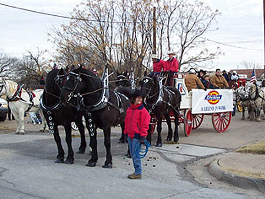
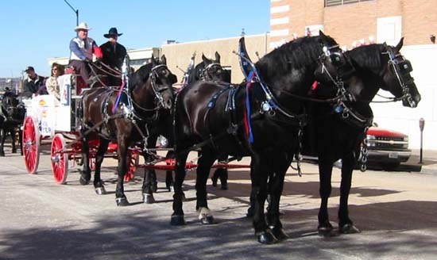
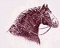
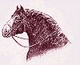

Casey Williams driving in the 2003 Fort
Worth Parade.
Robert Lewis of Bandera, Texas is
assisting Casey on the Box.
The company is Williamson-Dickies Mfg.
Co. of Ft. Worth.
Photo by Donna Hornsby
The Lone Star Hitch is unique in Texas
with its use of draft horses for public
relations and education. Many companies have found these Percherons
to be very beneficial in promoting their product as well as educating the
public about the importance of the draft horse in the economic development
of America.

Winning 'Most Colorful' in the 2002 Fort
Worth Stock Show Parade carrying
Williamson-Dickie Manufacturing Company
| 
This Draft Horse Web Ring site is owned by Ken Williams. Want to join the Draft Horse Web Ring? |
|---|
| [Skip Prev] [Prev] [Next] [Skip Next] [Random] [Next 5] [List Sites] |